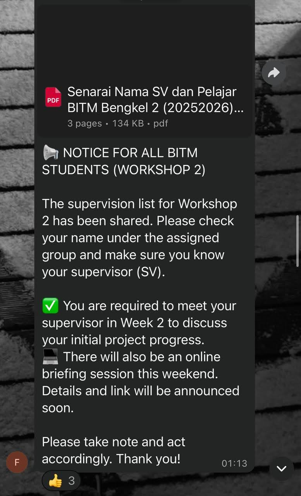
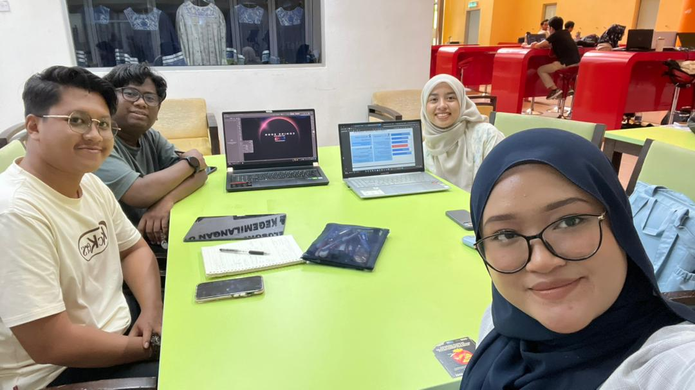
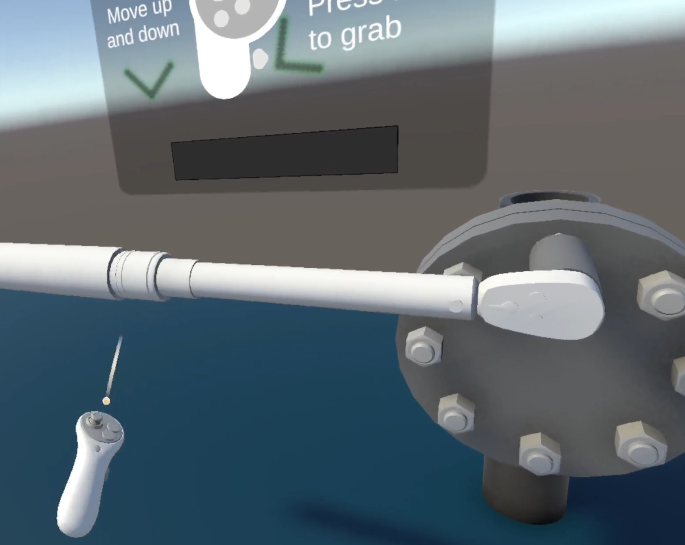

Current Work in Progress

The supervision list for Workshop 2 was distributed. An online briefing for Workshop 2 was conducted via Microsoft Teams, including an introduction to the Ipetro case study.

We began drafting the project, discussed the workflow, shared tasks among groupmates, and consulted with the supervisor.

I started developing the main game mechanic of tightening bolts using a torque wrench.
The supervision list for Workshop 2 was distributed. An online briefing for Workshop 2 was conducted via Microsoft Teams, including an introduction to the Ipetro case study.
A group discussion was held to decide between producing a short film or developing a VR project for the Workshop 2 assignment.
We had an online meeting with Ipetro to get more details about the project, and tasks were divided among group members. Our group faced difficulties in determining how to begin the project. The issue was resolved after an extensive discussion with our supervisor.
We finished the group proposal, had it checked by our supervisor, and submitted it.
We began drafting the project, discussed the workflow, shared tasks among groupmates, and consulted with the supervisor.
We met at the library to further discuss the project flow and clarify any misunderstandings regarding task distribution, ensuring that all members clearly understood their responsibilities and project objectives.
I started developing the main game mechanic of tightening bolts using a torque wrench. Having a hard time using unity but I solve the problems by watching tutorial videos and asking my groupmate for guidance.
The torque wrench interaction was enhanced to create a more immersive experience, allowing users to achieve better engagement and realism. I initially struggled to implement the logic for the torque wrench. However, after consulting with my supervisor, seeking advice from a friend, following online tutorials, and using AI assistance, I successfully developed the logic
The torque wrench interaction was enhanced to create a more immersive experience, allowing users to achieve better engagement and realism. I initially struggled to implement the logic for the torque wrench. However, after consulting with my supervisor, seeking advice from a friend, following online tutorials, and using AI assistance, I successfully developed the logic
Meeting at the library to set up VR headset and connect with unity.
We searched for a printing company that can print out our shirt for showcase and deciding what merchandise to create for our project. We also have an online meeting to show to our supervisor about our progress for both VR and report.
We finalized the design for the shirt and ordered it.
Meet up with the Ipetro team to show progress of the project and get feedback from the Ipetro team for any improvements. logic
Set up tables for the project showcase. Prepare every merchandise, explanation and promotional video for evaluators